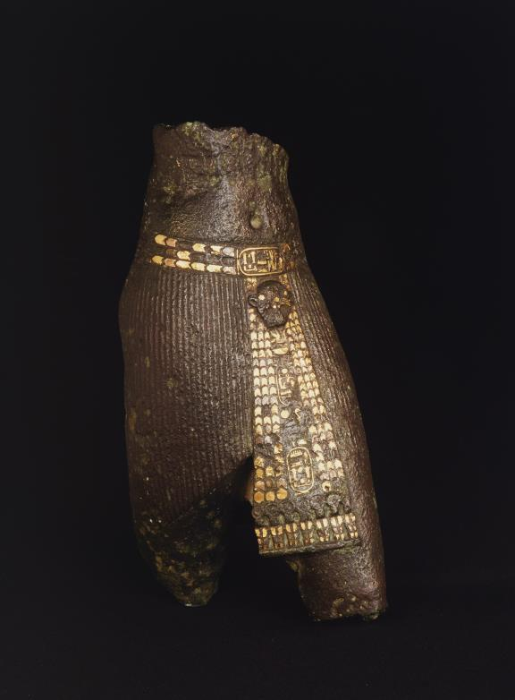
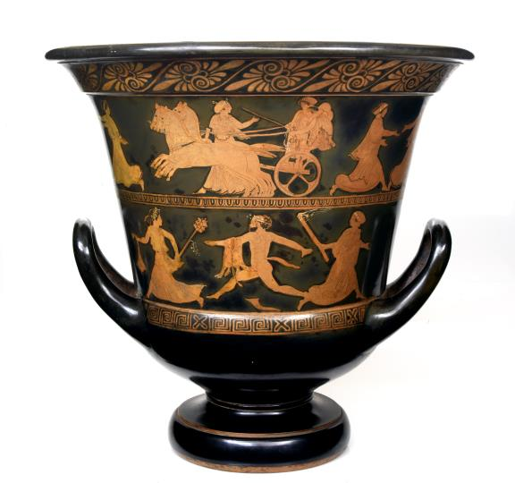
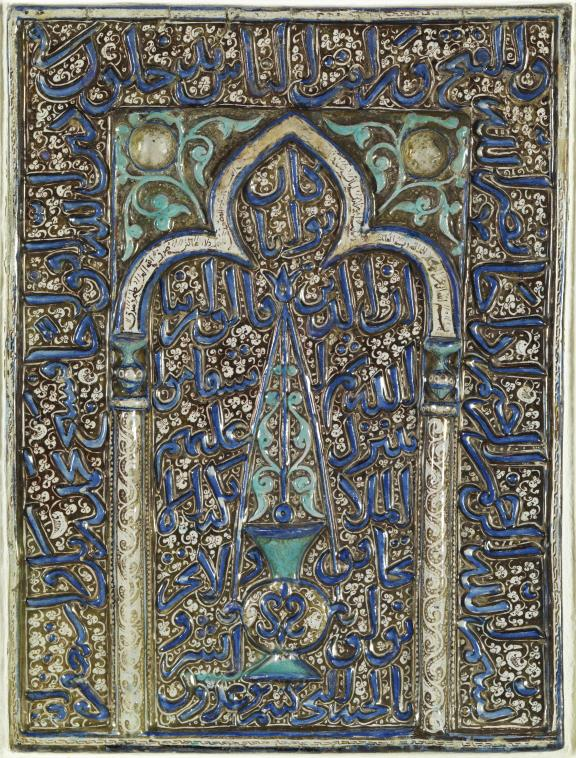
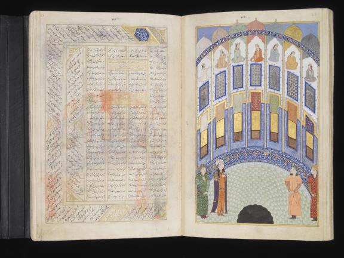
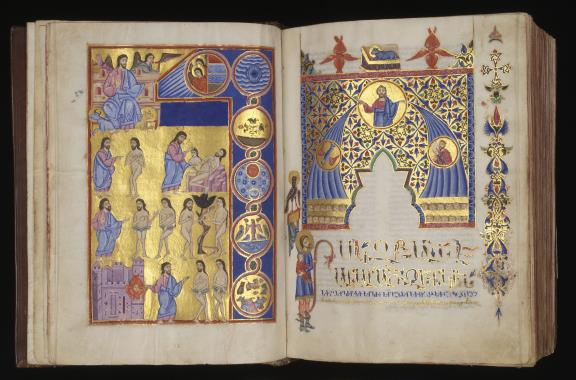
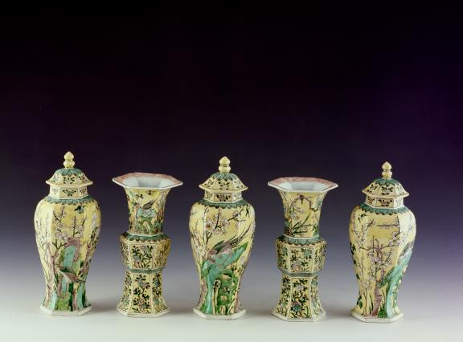
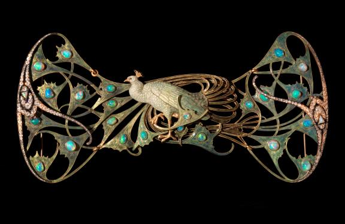

The Founder's Collection reopened on 18 July 2026 after a 16-month renovation, in the Foundation's 70th year. New: a numismatics room, restored daylight and garden views from the galleries. Expect crowds while admission is free — the route below follows the museum's own circuit, from ancient Egypt to Lalique, through 42 works with reasons to care about each.
One idea to carry through: Calouste Gulbenkian bought about 6,000 objects in his life and kept perhaps the world's highest ratio of masterpieces among them — "only the best". Watch the provenances: Hermitage sales, Rothschild collections, Howard Carter as a buying agent, Lalique as a personal friend.
In each section, From the walls folds in the museum's own room panels, photographed on reopening night — tap one to read the room in the curators' voice before meeting the works.
Hours 10:00–18:00 · until 21:00 on Saturdays · closed Tuesdays
Tickets
Free admission until 26 July 2026; after that €14 all-inclusive. Always free on Sundays from 14:00 and for under-18s. Checked 20 Jul 2026 — confirm on gulbenkian.pt.
Where Av. de Berna 45A · metro São Sebastião / Praça de Espanha
Route Two wings: Antiquity & the East, then Europe. Gardens between the Museum and the CAM (Centro de Arte Moderna).
Note Post-renovation room numbers are new — sections below follow circuit order, not room numbers.
The classic circuit: entrance at 0, Antiquity & the East along the top wing, Europe around the courtyards, Lalique last. The 2026 renovation renumbered the rooms and carved out the new numismatics cabinet, but the shape of the walk is the same. Plan: Hmaglione10, Wikimedia Commons, CC BY-SA 4.0.
Egyptian Art
Gulbenkian bought Egyptian art sparingly and at exactly the right moment. Two of the three pieces here came from the 1922 Sotheby's sale of the Rev. William MacGregor's collection — with Howard Carter, months away from opening Tutankhamun's tomb, acting as his agent. The group is tiny by museum standards, which is the point: he wanted one perfect object per idea, not a survey.
From the walls — the museum’s own room panels
room textAncient Egypt
Shaped by major archaeological discoveries throughout the 20th century, the growing taste for Egyptian art deeply influenced Calouste Gulbenkian’s collecting practices, beginning as early as 1907. His interest was nurtured through his correspondence with Howard Carter, the discoverer of Tutankhamun’s tomb in November 1922, who later became his principal advisor for acquiring Egyptian antiquities.
From 1921 onwards, Calouste Gulbenkian set out to become a ‘foremost collector of Egyptian art’, insisting on acquiring objects of aesthetic rather than purely archaeological significance. This preference – echoed in the selection of objects displayed in this room, crafted from the finest materials – paints an exquisite image of a civilisation shaped by kings and priests. Across the vitrines, both ceremonial and funerary objects reflect the beauty of human and animal form through portraiture, offering a vision of the past that aligns with the taste of a private collector.
From a tomb in the shadow of the Great Pyramid: the two women flanking the royal cartouche are daughters of Princess Meritites II, herself a daughter of Khufu, the pyramid's builder. Three generations compressed into one carved block, with text and image doing a single job — the family paying respect while naming the royal grandfather. Gulbenkian bought it at the MacGregor sale at Sotheby's in July 1922, using Howard Carter as intermediary; four months later Carter was standing at the door of Tutankhamun's tomb.
Twelve centimetres of obsidian, and one of the great portraits of antiquity. Obsidian doesn't occur in Egypt — it was imported, reserved for royal contexts, and is brutally hard to carve without shattering. What the sculptor did with it is more radical still: instead of the pharaoh's conventional eternal youth, Senusret III is shown heavy-lidded and worn, a king as administrator rather than god. This new realism defines Middle Kingdom royal art, and no piece states it more concisely. Also from the MacGregor sale of 1922.

Torso of King Pedubast
Egypt, Third Intermediate Period, 23rd Dynasty, 818–793 BCE
A masterpiece of a politically broken era. During the Third Intermediate Period Egypt fragmented under dynasts of Libyan descent — and precisely then its bronze-casting reached a peak never surpassed. This torso of Pedubast, founder of the 23rd Dynasty, is bronze inlaid with gold and copper; look for the fine chased detail on the belt naming the king. Ex-collection of Count Gregory Stroganov, bought in Amsterdam in 1921 through Duveen, the era's most notorious dealer.
Greco-Roman World
Coins were Gulbenkian's first collection — he began buying them as a schoolboy in the Istanbul bazaars — and classical antiquity remained a touchstone of what he called 'only the best'. Look for how portable these objects are: gems, medallions, vases. Antiquity here is something a man could hold, not a hall of marbles.
From the walls — the museum’s own room panels
room textPrecious materials
Signifying status or power through their origin, rarity or the technological sophistication required to work them, ancient gems, gold and precious-stone jewellery, and finely crafted vessels were collected for many reasons. A ring set with an intaglio or an exquisite collar served as both a political and economic statement, demonstrating its owner’s ability to command precious stones and gold imported from afar, as well as the skilled artisans capable of shaping them.
Collected as reflections of an exclusive taste – rooted in finely carved philosophical or literary imagery – such objects also highlighted the privileged social background and education of the elite. These qualities and symbols continued to be recognised long after their creation, whether through Neoclassical imitations or shared collecting practices.
room textClassical Antiquity
Both born and mainly developed in the Mediterranean region, the Greek and Roman civilisations shared common values and symbolism in their artistic productions, celebrating gifted craftmanship as an asset cherished by powerful elites. Glasses, ceramics and marbles were used as media to address complex issues such as human nature and our relationship with beauty, impermanence or even death.
Powerful enough to carry their symbolism through time, these objects echoed the taste of the knowledgeable 19th-century elite. Through his acquisitions, Calouste Gulbenkian engaged with this heritage, recognising in their refinement the origins of his own taste.

Attic Calyx-Krater
Attributed to the Coghill Painter, Attica, c. 440 BCE
A krater is a mixing bowl — Greeks cut their wine with water, and this vessel was the centrepiece of the symposium. The upper register shows the Dioscuri, Castor and Pollux, abducting the daughters of Leucippus: a story that ends with Castor dead and the twins set among the stars as Gemini, so the party vessel carries a funerary undertow, as kraters (also used as grave markers) often did. Bought in London in July 1917, from the old Hope collection — Gulbenkian was buying calmly in the middle of the First World War.
From a hoard of twenty gold medallions found near Aboukir, Egypt, in 1902 — the only gold medallions to survive from the Roman period. Gulbenkian secured eleven of them. The emperor Caracalla is shown in the visual language of Alexander the Great, whom he obsessively emulated; the medallions were probably prizes or commemorations linked to the Alexander games at Beroia in Macedonia. Roman power dressing itself in Greek myth, five centuries after Alexander died. Previously owned by J. Pierpont Morgan.
Mesopotamia
One monumental relief anchors the ancient Near East. It is worth standing close: Assyrian palace reliefs are political theatre in alabaster, and this one still carries its cuneiform caption — the king's titles running straight across the image, text and picture doing one job together.
From the walls — the museum’s own room panels
room textMesopotamia, Greece and Rome
As a native of Istanbul – long regarded as a meeting point between Eastern and Western cultures –, Calouste Gulbenkian showed a strong interest in the civilisations that flourished on both sides of the Bosphorus.
In the late 19th century, monumental remains of Assyrian sites in Mesopotamia were revealed to European audiences, most notably the alabaster reliefs from the Palace of Nimrud and the thousands of clay tablets once thought to provide direct evidence of Biblical episodes. These discoveries resonated with Calouste Gulbenkian’s classical education, which encouraged the study and collecting of numismatics and antique gems as a gateway to the aesthetics and understanding of the ancient world.
This selection reflects the exchanges between Asia and Europe – from military encounters to shared technical and iconographic traditions – through objects chosen by a man whose education and personal convictions brought these two spheres together.
room textMesopotamia
Encompassing the territory between the Tigris and the Euphrates, Mesopotamia is traditionally defined as the core area of the Ancient Near Eastern region. Home to the first massive urban centers, which brought together thousands of people, the region witnessed the earliest development of administrative tools such as cylinder seals and clay tablets.
Excavated remains captured the imagination of the elite, challenging the traditional Biblical vision of a land populated by strange beings and revealing instead a thriving iconography that served imperial propaganda. Featuring powerful protectors for a king, combining commanding presence with learned inscriptions, Calouste Gulbenkian recognised the importance of the monumental Assyrian reliefs, which evoke the ancient power of an empire that prospered from the Mediterranean to the Persian Gulf.
From the walls of Ashurnasirpal II's palace at Nimrud. The winged figure is an apkallu — a 'wise one', an apotropaic spirit carved in pairs beside the king to turn away evil, here performing a purification ritual. The band of cuneiform running straight across the carving is the king's 'Standard Inscription': titles, conquests, protecting deities, repeated obsessively through the palace. Its siblings line the British Museum and the Met; Gulbenkian secured his in Paris in 1920. Stand close — the alabaster still holds fine detail in the feathers and the muscled calf.
Islamic East
This is the heart of the collection. Gulbenkian was an Ottoman-born Armenian who grew up inside this visual culture, and it shows: the carpets, Iznik ceramics, mosque lamps and Persian manuscripts are chosen with an insider's eye, not an orientalist's. The renovation restored these galleries' openness to the garden — the pieces sit in daylight the way they were meant to.
From the walls — the museum’s own room panels
room textIslamic World
Calouste Gulbenkian described himself as an ‘Oriental collector’, and to him the works on display in this gallery were ‘Oriental art’. By 1910, other terms had come into fashion, such as ‘Muslim’ and ‘Muhammadan’ (modelled on ‘Christian’). However, these were considered too narrowly focused on sacred art. Eventually, scholars adopted the term ‘Islamic’ to express the idea that the arts created in regions where Islam historically predominated – from Morocco to Indonesia – shared certain intrinsic characteristics. These included a preference for portable objects and calligraphy, as well as intricate vegetal, floral and geometric designs.
Because these arts originated across a vast space, they also reflect the multiplicity of cultures, societies and even religions that flourished within it. The result is a rich diversity of artistic traditions that express human creativity – whether conveying spiritual meaning, the brilliance of poetry, or the technical mastery of ceramics, glass, textiles and the arts of the book.
room textIran, 1000–1500
Under the Seljuq dynasty (1040–1157), Iran experienced stability and prosperity, which fostered artistic innovation. The city of Kashan emerged as a prolific centre for ceramics painted in the lustre technique. Metal objects inlaid with gold and silver grew in prestige, with their shapes and glittering designs influencing pottery.
By 1258, the Mongols had conquered most of West Asia, with Iran being ruled by a branch known as the Ilkhanids (1256–1353). Following the conversion of Il-Khan Mahmud Ghazan (r. 1295–1304) to Islam in 1295, the arts began to flourish again, this time in an environment of intense cultural exchange with East Asia. The two tile panels here, made in Kashan, were commissioned by ruling Mongol Ilkhans, a woman and a man.
room textSafavid Iran
The Safavid Empire, which ruled Iran from the 16th to the 18th century, distinguished itself through the remarkable artistic production fostered by the court, which used the arts as a political and religious instrument to assert Persian identity.
During the reign of Shah Tahmasp (r. 1524–76), the art of the book flourished, with the establishment of royal workshops that produced richly illustrated manuscripts of exceptional technical and artistic quality. Under Shah Abbas I (r. 1587–1629), the Empire reached its cultural and political apogee, with Isfahan as its capital. Textile production experienced renewed momentum, stimulating the trade of silk, carpets and other textiles with Europe and contributing to the Empire’s international prestige.
room textMamluk Egypt and Syria, 1250–1500
In 1250, the Ayyubid dynasty was overthrown by slave-soldiers (mamluks), who formed the Mamluk Sultanate in Cairo, ruling Egypt and Syria until 1517. These Kipchak Turks, and later Circassians, were bought as adolescents and sold to the sultan or his officers (emirs). Those who demonstrated military prowess could rise to the rank of emir, a prerequisite for being selected as sultan.
Since landed wealth could not be inherited, sultans and emirs spent lavishly. The many objects bearing their names testify to their abundant patronage. Examples include the rare glass lamps in this gallery, commissioned for religious and funerary sites. The large bottles also attest to a desire to impress. Women enslaved in the sultan’s household accumulated and spent fortunes as well.

Lustre Mihrab (Prayer Niche)
Kashan, Ilkhanid period, late 13th–early 14th century
When the Mongols swept Iran in the early 1200s, Kashan — the city so associated with ceramics that Persian named tiles after it (kashi) — nearly stopped producing. This moulded tile mihrab belongs to the revival a generation later under Mongol Ilkhanid patronage: cobalt and turquoise under the glaze, copper lustre over it. At the centre hangs the lamp symbolising divine light; the Quranic inscriptions frame the niche that orients prayer toward Mecca. A wall's most important square metre, made portable.
Mamluk enamelled glass was the finest glasswork on earth in its day, and lamps like this are its summit. The form is theological: the Quran's Light Verse (24:35) compares God to 'a lamp within a glass, the glass as it were a glittering star', so the object hanging in the mosque was itself a metaphor made physical. This one was made for the amir Mahmud ibn Shirwin and carries his heraldic emblem — a red fleur-de-lys. From the collection of Baron Gustave de Rothschild, bought via Duveen in 1919.
Iznik tiles were a state enterprise feeding the imperial mosques; Iznik plates were made by private workshops competing in the open market — which is why the best of them take risks. This one abandons the usual symmetry for a startling composition: a large peacock feeding a smaller one perched on its back. The tail colours mark both as males — so not mother and chick but plausibly father and son, an image with no real parallel in the repertoire. Ottoman ceramics at their most inventive, right at the 1570s peak of the red-and-emerald palette.

Anthology of Iskandar Sultan
Shiraz, Timurid period, 1411
Paper; Ink; Gouache; Gold · Inv. LA161 · museum page
Commissioned by Iskandar Sultan, grandson of Timur (Tamerlane), while governor of Shiraz — a prince who poured his short life into manuscripts rather than conquest. Among its 32 miniatures is Bahram Gur and the Seven Portraits from Nizami's poem, painted in the jewel-box style that made Timurid Shiraz and Herat the standard for all later Persian, Mughal and Ottoman painting. A gift to the collection from Baron Edmond de Rothschild. Manuscript illumination is the Persian tradition's central art form; give this one the time you'd give a painting gallery.
Five and a half metres of wool: a 'dragon carpet', named for the highly stylised dragons locked into its geometric lattice — you have to hunt for them, which is half the pleasure. These were woven in the Caucasus, outside the court workshops, keeping an older, harder-edged design language. The personal angle: Gulbenkian's fortune began with Baku oil, and after his 1891 trip there he wrote a book on Transcaucasia at age 22. He collected Caucasian carpets his whole life — this is the collection remembering where the money came from.
A white jade drinking vessel inscribed with the name of Ulugh Beg — Timur's grandson, ruler of Samarqand, and one of history's great astronomers. At his observatory he and sixty scholars catalogued nearly a thousand stars and measured the stellar year to within a minute of the modern value. Owning his jug is as close as a collection gets to holding the Timurid scientific renaissance in 16 centimetres. Later inscriptions added by subsequent owners track its passage through royal hands. Bought via Duveen in 1927.
Nearby in this room — labels worth finding
gallery labelJug made for Ulugh Beg (1394–1449)
Samarqand, Uzbekistan, 1417–49 · White jade (nephrite) with added handle
This mashraba, or drinking vessel, has long been esteemed as a masterpiece of white jade. An inscription around its neck gives the name and titles of Ulugh Beg. Two inscriptions added later name the Mughal rulers Jahangir (r. 1605–27) and his son Shah Jahan (r. 1628–58), legitimising their rule over India as descendants of Timur the Conqueror (r. 1370–1405), through his grandson Ulugh Beg.
gallery label‘Portuguese’ carpet
Khorasan (?), Iran, Safavid period, second half of the 17th century · Wool and cotton · Inv. T99
The origin of the composition of these carpets, like their provenance, has been controversial. The arrival of the Europeans, who travelled to Iran by boat, gave rise to a variety of new themes for painters and, consequently, for master weavers, as is the case with the carpets that came to be known as Portuguese carpets. At the same time, Persian literature also contained countless descriptions of sea voyages that were transposed into painting. These representations gave rise to numerous interpretations in carpets. Currently, the unanimous opinion is that these pieces were produced in Iran.
Armenian Art
A small, personal room. Gulbenkian funded Armenian churches, libraries and refugee relief all his life, quietly; the manuscripts here are the collection's most private corner — the art of a diaspora that carried its culture in books.
From the walls — the museum’s own room panels
room textArmenia(n)
Born in Istanbul, in 1869, Calouste Gulbenkian was of Armenian origin. The Kingdom of Armenia holds a special place in early Eurasian history, for it was the first state to adopt Christianity as an official religion in 301 AD. Since then, Armenian identity has been closely tied to religion and language, giving rise to rich architectural and manuscript traditions.
Armenian communities have been on the move since at least 1064, when Ani, in present-day Türkiye, fell to the Seljuk Turks. Wars, deportations and genocide have contributed to the formation of a global diaspora marked by strong social bonds and far-reaching networks, extending from India and Iran to China and Europe. Historically, Armenian merchants played key roles in the trade of raw silk, as well as silver, cloth, minerals and precious gems – the same commodities that Armenian workshops transformed into silk textiles, carpets, metalwork and ceramics, with intellectual centres producing illuminated manuscripts.

Armenian Bible of 1623
Commissioned by Khodja Nazar, Istanbul, 1623
Paper; Leather; Gouache; Gold · Inv. LA152 · museum page
In 1605 Shah Abbas forcibly resettled hundreds of thousands of Armenians to 'New Julfa' in Iran. Khodja Nazar, one of the wealthy merchants of that displaced community, commissioned this Bible from Istanbul — order and finished book each travelling 1,800 km, a measure of how far Armenian networks reached. It opens with a double folio of the Creation facing Christ Pantocrator. For Gulbenkian, an Istanbul Armenian whose community was annihilated in 1915, this room was never just connoisseurship; he funded Armenian churches and refugees privately all his life.
Far East
Chinese porcelain and Japanese lacquer, most of it export art — objects made in one taste system to be desired by another. Gulbenkian bought his first Japanese lacquer in 1916, before he owned any of the famous paintings. The 'Coromandel' screen and the Kangxi garniture show what European elites actually did with Asian art: they furnished with it.
From the walls — the museum’s own room panels
room textLacquers
For the art lover that Calouste Gulbenkian was, every object was selected for its personal appeal rather than its market value, resulting in an eclectic collection of pieces, all in excellent condition.
The majority of the lacquer items were purchased in London in the first two decades of the 20th century, sourced from private collections or from the sale of the collection of Sir Trevor Lawrence (1831–1913). The objects on display, of various types and techniques, illustrate the art of lacquer in Japan from the late Edo period (1615–1868) to the early Meiji era (1868–1912).
room textChina
Calouste Gulbenkian’s earliest acquisitions of Chinese art were inspired by his longstanding interest in the Islamic world. Ming blue-and-white porcelains and mythical creatures such as dragons and phoenixes echoed transcultural connections with his Persian collection. Overall, he favoured striking objects in brilliant colours, a preference also reflected in his choice of polished hardstones carved with auspicious natural imagery.
In the 1920s, after purchasing a Parisian hôtel particulier at 51 Avenue d’Iéna, his attention turned to designing its interiors. He sought out luxurious furnishings, including Qing dynasty export porcelains in green, pink, yellow and black, designed to appeal to European rather than Chinese tastes. Among these acquisitions was a lacquered folding screen, another type of art commonly exported to Europe. Calouste Gulbenkian completed this collection in 1947 with the acquisition of a quintessentially Chinese object: a stem cup depicting scholars seated among bamboo, an image embodying Confucian ideals of moral wisdom and virtue.
room textJapanese prints
Gulbenkian’s fascination with Asian art is reflected in his acquisition of Japanese works, made more accessible in the West following Japan’s opening to international trade in the Edo period (1603–1868). The collector’s commissions resulted in some exquisite lacquerware and a selection of Japanese prints.
These prints reveal both his taste and his commitment to assembling a small collection of woodblock works (carved into wooden blocks and printed on paper) by masters including Utamaro, Hiroshige, Hokusai and Eizan. The prints he collected explore themes such as the beauty of the female figure, everyday pleasures, kabuki theatre and serene visions of nature. Taken together, they conjure the ukiyo-e floating world, a period in which popular culture thrived.

Famille Jaune Garniture
Jingdezhen, Kangxi period, late 17th–early 18th century
A garniture is a matched set of vases in odd number, made in China specifically to be arranged on European mantelpieces — Chinese craft engineering itself for Western display habits. This yellow-ground (famille jaune) set alternates hexagonal jars with trumpet vases, visually stitched together by one continuous scene of pheasants, peonies and prunus. Jingdezhen, the porcelain city, could tune its output to any export market on earth; this is globalisation, c. 1700, in five vessels.
Twelve panels, six metres wide: a screen of incised lacquer showing episodes of palace life, of the type Europeans called 'Coromandel' after the Indian coast through which the East India trade routed them. The technique cuts the design down through layers of lacquer into a clay ground, then fills the cavities with colour — closer to intaglio than to painting. Rarer still, this screen keeps calligraphy on its reverse. Bought through Duveen in 1920; screens like this were the most architectural objects a European collector could own from China.
A lacquer box for inkstone, water-dropper and brushes — the desk set as high art. Deer among autumn flowers, executed in a compendium of maki-e techniques: gold relief (takamaki-e), flat sprinkled gold (hiramaki-e), cut-gold foil (kirikane) over a pear-skin ground (nashiji). Japanese lacquer rewards close viewing more per square centimetre than almost anything in the museum. Bought at Christie's in 1916 from the Trevor Lawrence collection — among Gulbenkian's earliest recorded purchases, a decade before the famous paintings.
Medieval Europe: Ivories & Illumination
Private devotion, portable luxury. Gothic ivories and Books of Hours were the smartphone-scale objects of their day — held in the hand, read daily, carried between houses. Note how the same century that built cathedrals also perfected art you could close and put in a bag.
From the walls — the museum’s own room panels
room textEurope, 12th–17th centuries
The European art here presented is displayed according to a chronological and geographical arrangement and includes painting, sculpture, ivories, medals and textiles.
The area devoted to illuminated manuscript books and Gothic ivories opens the presented museum itinerary, which then moves on to 15th-century Flemish painting – represented by Rogier van der Weyden – and to 15th and 16th-century Italian painting, where Venetian and Florentine Renaissance production is particularly relevant. Small-scale religious sculpture from the regions of Paris, Troyes, and Upper Swabia punctuates the gallery. The section concludes with Northern European painting, represented by two of its most important figures: Peter Paul Rubens and Rembrandt. As with portraiture, Dutch Golden Age landscape painting is also represented, with two works by Jacob van Ruisdael.
room textIlluminated manuscripts
In his search for richly illuminated or finely calligraphed manuscripts, Calouste Gulbenkian assembled a small but valuable group of 24 books, 1 incunabulum and 16 loose European folios. These specimens, originating from major bibliophiles’ collections, were acquired between 1919 and 1937, mainly on the book markets of London and Paris.
Produced between the 12th and 16th centuries in England, Netherlands, Flanders, Italy, and above all France, these works fall into various categories, ranging from biblical and liturgical books to texts of a literary, legal or devotional nature, with a particular emphasis on books of hours. The fragility of the materials used in these manuscripts – richly painted on parchment, incorporating gold, and occasionally preserving their original bindings – means that this collection is displayed in rotation.
room textGothic ivories
Throughout the Middle Ages, highly skilled craftsmen transformed elephant tusks from sub-Saharan Africa into delicate sculptures greatly valued by Europe’s elites. Closely tied to the expansion of long-distance trade routes, between 1250 and 1400, the production of these luxury objects reached its peak.
Paris became the main centre of production, from which Gothic ivory carving spread, reinterpreting forms and visual languages rooted in Byzantine models. Diptychs and triptychs depicting scenes from the lives of Christ and the Virgin became especially popular, their portability and narrative structure lending themselves to moments of private devotion and meditation. Attuned to this contemplative character, Calouste Gulbenkian was also drawn to the exotic nature of the material – present elsewhere in the collection – as well as to the excellence of the craftsmanship and their prestigious provenance.
Gothic ivory carving's golden age, at full power. The Virgin's life and Assumption unfold under cusped arches like a cathedral façade shrunk to hand scale — and that's the right way to read it: portable architecture for private devotion. The narrative follows the Golden Legend, the 13th century's bestselling compilation of saints' lives. The triptych closes on itself; it was made to travel with its owner and open like a book. Paris was the Silicon Valley of ivory at this date, exporting across all Europe.
One of the finest illuminated books of the years around 1400, made for Margaret of Cleves, wife of the Count of Holland, with eleven full-page miniatures of startling inventiveness. A Book of Hours scheduled private prayer through the day — the laity buying into monastic time-discipline as luxury. The miniatures' bold compositions anticipate what Netherlandish painting would do on panel a generation later with van Eyck. She later gave it to a convent in Alsace, as an inscription on the last folio records.
Renaissance & Baroque Painting
The room of the Hermitage coups. Between 1929 and 1930 the Soviet government, desperate for industrialisation currency, secretly sold masterpieces from the Hermitage; Gulbenkian — who traded oil concessions with the Soviets — was first in line, before even the Mellon purchases. The Rembrandts, the Rubens and Houdon's Diana all came to him this way, via the state agency Antikvariat.
From the walls — the museum’s own room panels
room textPainting and sculpture, 15th–17th centuries
The presentation of painting begins in the gallery dedicated to the 15th–17th centuries and is organised into three principal areas. The first displays a small group of religious works, predominantly of Flemish origin. A second section presents works produced in the cities of Florence and Venice. This section features religious paintings from the Renaissance, the highlights being works by Cima da Conegliano, Vittore Carpaccio, Domenico Ghirlandaio and Giovanni Battista Moroni.
Portraiture occupies a substantial part of the 17th-century paintings, where some of the collection’s most celebrated works can be found, including the Portrait of Helena Fourment, by Peter Paul Rubens, and Old Man with a Stick, by Rembrandt, both formerly in the collection of Catherine II of Russia.
room textEurope, 15th–17th centuries
The Renaissance and humanist culture introduced new conceptions of beauty and power to 15th and 16th century Europe that were reinterpreted over the centuries that followed, shaping the Early Modern Period.
Thus, inspiration drawn from the themes and models of Greek and Roman Antiquity – together with the Christian legacy – is evident in works from this period in the Gulbenkian collection, from Italian and Flemish tapestries to printed books, as well as in Italian sculpture, ceramics and medals. Patrons – often heads of state represented through portraits, inscriptions, coats of arms or other symbols – are likewise evoked in many of these artistic achievements, as in the sculpture of Saint Martin, which bears the arms of King Francis I of France.
Finally, the 15th and 16th centuries were marked by the central role of Italy – particularly Venice – in contacts between Europe and the Middle East, a connection especially evident in the textiles and Italian books from this period in the Gulbenkian collection.
room textRenaissance textiles
Italian velvet production flourished at the end of the 15th century and continued to thrive throughout the 16th. Cities such as Florence, Genoa and Venice came to dominate the trade and the production of precious textiles destined for the elite. The technical and artistic excellence of Italian workshops rivalled that of the traditional centres of Western Asia, which they eventually surpassed. Mutual influences between Italian and Ottoman production are particularly evident in the decorative motifs.
Tapestries stood among the great luxury goods produced during this period, benefitting from significant technical innovations. Beyond their decorative purpose, they added comfort to large interiors and were chiefly figurative, illustrating battles, mythological themes, biblical stories or historical events.
room textRenaissance medals
The medal stands as one of the Renaissance’s major artistic innovations, capturing the spirit of the age with remarkable clarity. Inspired in Antiquity, this sculptural form embodies the humanist emphasis on the individual and the wish to preserve their memory. In 1438, Antonio Pisano, known as Pisanello, gave material form to this ideal in a new commemorative object. Combining image and text, the Renaissance medal shows a portrait on the obverse and, on the reverse, motifs alluding to the subject’s qualities, lineage, convictions or aspirations. Portable and easily reproduced, it became popular in Italian courts.
Calouste Gulbenkian’s interest in medals stemmed from his admiration for the art of portraiture. Although a member of several medallic societies, he never considered himself a numismatist, focusing instead on the artistic quality of the pieces.
room textBooks and works on paper
In the mid-15th century, Gutenberg’s experiments contributed to the birth of printing. Relying primarily on paper and reproducible technologies, the printed book – often illustrated with prints – spread across Europe in the 15th and 16th centuries, gradually replacing illuminated manuscripts. This innovation fostered the development of bookbinding workshops, where morocco leather and gold tooling were used. Book-producing centres emerged, such as Venice, Lyon, Frankfurt, Basel or Paris, publishing works beyond the sphere of Christianity and Latin and reflecting a humanist, Renaissance society.
Alongside luxurious editions from the 16th and 17th centuries, Gulbenkian also acquired, albeit only occasionally, drawings and prints by artists such as Dürer and Vorsterman, which are displayed in rotation due to the fragility of their materials.
Two small survivors of a dismembered altarpiece whose most famous fragment, The Magdalen Reading, hangs in London's National Gallery. A drawing in Stockholm preserves the lost whole: six saints around the Virgin and Child. The richly dressed woman is probably Saint Catherine; the older man, Saint Joseph. Even at fragment scale you can see what made Rogier the most influential Netherlandish painter of his century — the porcelain finish of flesh, the gravity of downcast eyes. Bought in Amsterdam in 1923.
Quattrocento Florence in one face. The sitter resembles the women of the Sassetti family — bankers in Lorenzo de' Medici's inner circle whom Ghirlandaio frescoed in Santa Trinita — and wears Florentine fashion with a coral necklace at the throat. The three-quarter turn against a plain ground marks the moment portraiture moved past the rigid profile, just before landscape backgrounds arrived. Ghirlandaio ran the workshop where Michelangelo apprenticed; this is the visual culture that trained him. Bought in Berlin in 1929, via Duveen.
Rubens at 53 married the 16-year-old Helena Fourment and painted her constantly, with an intimacy that still startles. The tall narrow panel and low horizon make her monumental: black satin, ostrich-feather hat, the fabric handled with the bravura that made Rubens Europe's most envied painter. For two centuries the picture was misattributed to Van Dyck, including in Robert Walpole's collection at Houghton Hall — from which Catherine the Great bought it wholesale in 1779. Gulbenkian extracted it from the Hermitage in the Soviet sales of 1930.
Probably a tronie — Dutch painting's term for a character study rather than a commissioned likeness — staged with workshop props, possibly gesturing at a biblical elder, an ambiguity Rembrandt likely cultivated for the market. What holds you is the hands and the shadowed eyes: dignity assembled almost entirely out of darkness. This is one of the two Rembrandts Gulbenkian pulled from the Hermitage in 1930, when Stalin's government quietly sold patrimony for industrial hard currency. Arguably the single greatest painting in Lisbon.
A very young warrior with Medusa on the shield and an owl on the helmet: Athena — though authorship, subject and date were argued over for a century, and current thinking sees master and pupil working together, consistent with how Rembrandt actually taught. One theory places it in a trilogy of goddesses with a Venus and a Juno. The armour is the show here: light scraped and loaded onto the helmet's relief in Rembrandt's late impasto manner. Also from the Hermitage sales, June 1930.
French 18th-Century Decorative Arts
Gulbenkian lived in Paris and furnished his house on Avenue d'Iéna with this: royal furniture and silver by the great ébénistes and goldsmiths. Almost everything here has a Rothschild or Russian imperial provenance. Treat it as sculpture — Cressent and Riesener led workshops as sophisticated as any painter's studio.
From the walls — the museum’s own room panels
room textEurope, 18th century
The 18th century was marked by profound changes in thought and mentality. Guided by the splendour of the French court, the art of this period moved between the more ostentatious and sumptuous character of Louis XIV’s reign and the more intimate and elegant styles associated with Louis XV and Louis XVI. This evolution found its preferred stage in the royal palaces and Parisian hôtels particuliers. Within these interiors, one could observe the harmonious interplay of the arts – painting, sculpture, furniture, textiles and metalwork – and the many ways in which artists collaborated: painters’ compositions were translated into large tapestries or small luxury objects; sculptors supplied models for silversmiths; bronze and porcelain manufactories produced ornamental elements for furniture. Within this context, the marchand-merciers played a central role. Dealers in luxury goods and intermediaries between artists and clients – ‘sellers of everything, makers of nothing,’ as Diderot put it – they were, in this Age of Enlightenment, true engines of artistic creativity, driving the market and shaping taste.
room textFurniture and textiles, 18th century
In the 18th century, French furniture reached an unprecedented level of technical and artistic refinement. The demands of a wealthy and sophisticated elite compelled cabinetmakers and ébénistes to meet new challenges, leading to the development of innovative technical and aesthetic solutions. The strict guild system, the arrival in Paris of foreign cabinetmakers with advanced technical expertise, and the introduction of new woods brought by maritime voyages were all fundamental to the extraordinary development of cabinetmaking and fine ébénisterie.
Textiles likewise played a central role in 18th-century interiors. In Lyon, silk production reached its peak. This creative vitality, combined with technical advances and the influence of Italian weavers established in France, enabled the city’s silk industry to achieve an incomparable level of quality.
room textGold boxes
The 18th century saw a flourishing of small luxury objects and a growing fascination with them. Snuffboxes (for powdered tobacco), bonbonnières and cases designed to hold sealing wax, needles and personal grooming or writing implements were among the many types that proliferated, circulating visibly in the pockets of the elites. Beyond their practical use, these objects conveyed the taste and status of their owners, functioning as fashionable accessories and preferred gifts in both diplomatic and sentimental contexts.
Paris was the foremost centre for stylistic and technical innovation, as well as for the manufacture and trade of such pieces. Other production centres in Germany, in Switzerland and in England also flourished, largely adopting Parisian models, though some developed their own distinctive approaches on a smaller scale.
room textBooks and works on paper (18th century)
Calouste Gulbenkian greatly admired the so-called ‘century of the perfect book’ and acquired more than a hundred volumes produced in the 18th century, mostly printed in France. He was particularly interested in the quality of the illustrations – often etched and engraved after drawings by renowned artists – and in the excellence of the bindings, frequently the result of prestigious commissions. He collected from large-format books of festivities to the more portable almanacs, including literary works by authors of Antiquity, such as Longus or Phaedrus, as well as writers of the Grand Siècle, like La Fontaine, Corneille or Molière.
Watercolours, drawings and prints from this century – especially French and English – also attracted the collector’s interest. These works, like the books themselves, are displayed in rotation, given the fragility of their materials.
room textFrench porcelain
Throughout the 18th century, French porcelain played a central role both in aristocratic daily life and in interior decoration, reflecting the refined taste and social status of European elites. Beyond their use at the table, these objects stood out for their decorative function, combining formal elegance, technical innovation and rich colour.
In the second half of the 18th century, the Sèvres Manufactory reached the height of its prestige, affirming its position as one of the foremost producers of luxury porcelain. This success resulted from the combination of significant technical advances and the direct support of the French court. The patronage of Louis XV and the influence of Madame de Pompadour were crucial in establishing the manufactory’s artistic and international reputation.
room textFrench silver
By the late 17th century, the dining habits and serving practices of the elites had undergone profound change. Centred on Versailles and rapidly adopted across Europe, service à la française was a method of dining in which numerous dishes were arranged on the table in an orderly manner and presented in successive stages. Silver services grew in both scale and variety, and Parisian silversmiths became the leading interpreters of these refined requirements, with their work sought after by courts from Lisbon to Saint Petersburg. Symbolically, the table functioned as a stage for display and the expression of power.
This pattern is mirrored in the 18th- and 19th-century silver that Calouste Gulbenkian assembled, selected for its authenticity, creativity, outstanding technical mastery, the renown of its makers and its notable provenance.
Furniture about collecting, made for collectors. Cressent, the most celebrated ébéniste of the Régence generation, trained as a sculptor — and it shows in the gilt-bronze mounts, where three boys operate a coin-minting press above medals of Louis XV. A medal cabinet was the Enlightenment gentleman's database: history, chronologically indexed in bronze and silver drawers. Ex-collection Baron Alphonse de Rothschild; unusually, a post-war purchase (New York, 1948) — Gulbenkian was still refining the collection in his final decade.
Oeben was the great mechanic among Parisian cabinetmakers — royal ébéniste-mécanicien, teacher of Riesener, and builder of furniture that transforms: this table converts between desk, reading stand and dressing table. The marquetry lid carries a military allegory linked to the founding of the École Militaire. French elite furniture of this decade is precision engineering wearing marquetry; Oeben died young, mid-construction of Louis XV's famous roll-top desk, which Riesener finished. From the Goldschmidt-Rothschild collection, Berlin, 1928.
Made for the Countess of Provence — Louis XVI's sister-in-law — at Versailles. The roll-top was the 18th century's privacy technology: one motion locks every paper on the desk. Riesener, Oeben's pupil and successor as royal cabinetmaker, was the perfectionist of the age; the marquetry and the sprung mechanism here are as good as the craft ever got, styled at the exact pivot from Louis XV curves to neoclassical straight lines. Bought in Frankfurt in 1931 from the Goldschmidt-Rothschild collection.
Silver-gilt tureens from the service Empress Elizabeth I of Russia commissioned from Germain, sculpteur-orfèvre du Roi — closely related to the models he made for the Portuguese court, whose Germain silver survives in Lisbon's Museu de Arte Antiga; seeing both in one city is a quiet luxury. Satyrs hold up drapery handles; the lids carry full Rococo sculptural groups; the Russian imperial arms are chased on the sides. Sold off by the Soviets with the Hermitage material in 1930. Tableware as diplomacy, executed at the level of sculpture.
The 18th Century: Portraits & Views
The Enlightenment's self-image: pastel intelligence, marriage portraits, Venice as spectacle, Versailles as a garden being replanted. Houdon's Diana — bought from the Hermitage, once Catherine the Great's — presides. This stretch of the circuit is where the collection is at its most theatrical.
From the walls — the museum’s own room panels
room textPainting and sculpture, 18th century
A highlight of the collection’s 18th-century French painting is the pastel Portrait of Duval de l’Épinoy by Maurice-Quentin de La Tour, presented at the Paris Salon of 1745. Portrait of Thomas Germain and His Wife by Nicolas de Largillierre and Portrait of the Duke of Richelieu by Jean-Marc Nattier attests to the diversity of the genre in the 18th century. Jean-Honoré Fragonard’s fanciful landscape The Island of Love, with Hubert Robert’s pair of views of the gardens of Versailles, likewise illustrate the vitality of French painting during this period.
French sculpture – featuring terracotta portrait busts, much in vogue in the 18th century – finds its finest expression in Jean-Antoine Houdon’s representation of the goddess Diana, the most significant sculptural work in the collection and a masterpiece by a leading figure of French Neoclassicism.
Pastel at a scale pastel was never supposed to survive: nearly 1.2 metres of powdered pigment, by the medium's undisputed master. La Tour's sitters look permanently on the verge of saying something clever, and Duval de l'Épinoy — royal secretary, surrounded by the props of Enlightenment rationalism — is peak examples of it. Connoisseurs regularly rank this among the greatest pastels in existence. Gulbenkian bought it in Paris in 1943, from Baron Henri de Rothschild, in the middle of the Occupation — collecting continuing under the war's surface.
Almost certainly painted for Elizabeth Garth's 1775 wedding: full-length in the grand Van Dyck tradition, salmon silk moving like weather, a spaniel for fidelity, and Gainsborough's feathery landscape doing half the emotional work. English portraiture of this decade is aristocracy performing naturalness — au naturel as the highest artifice. Bought via Duveen in 1923 from the Countess of Carnarvon — the family of Carter's patron at Highclere, selling as Egyptomania peaked around them.
Guardi took a composition Canaletto had fixed decades earlier — widely circulated through Visentini's engravings — and dissolved it: viewpoint pulled back, horizon dropped, sky doubled, the crowds reduced to flickering marks. Canaletto sells you Venice's architecture; Guardi sells you its atmosphere, and painting's future belonged to the second idea. The regatta runs from Ca' Foscari toward the Rialto. Bought at Christie's in 1919; its pair, the Feast of the Ascension, hangs nearby.
Louis XVI ordered the ageing trees of Versailles felled and replanted in 1774–76, and Hubert Robert — soon to be named designer of the king's gardens — painted the operation: classical statues standing amid stumps and workmen, Le Nôtre's absolutist geometry under maintenance. With its pair (Bosquet des Bains d'Apollon, also here), it reads now as an allegory painted 13 years early: the ancien régime cutting down its own park. From the Hermitage sales, 1929. Fitting viewing in a museum that just spent 16 months restoring its own garden dialogue.
The technical dare of 18th-century sculpture: a life-size goddess running, in marble, balanced on one foot — weight the material barely permits. It was excluded from the Louvre Salon as an 'affront to modesty'; Houdon (the century's great portraitist of minds — his Voltaire, his Washington) here made instead a machine of motion and cold elegance. Commissioned as a garden sculpture for Duke Ernest II of Saxe-Gotha, bought in 1784 by Catherine the Great, and prised out of the Hermitage by Gulbenkian in 1930 for his Paris house on Avenue d'Iéna.
Nearby in this room — labels worth finding
gallery labelThe Island of Love
Jean-Honoré Fragonard (1732–1806) · France, c. 1770 · Oil on canvas · Inv. 436
Described as ‘view of a picturesque garden’ at its first public sale in 1784, the painting was long believed to depict the park at Rambouillet. It is now believed that Fragonard did not intend to depict any specific location and that the composition – reviving the theme of the fête galante within a fictional garden – was a product of the artist’s imagination.
In a setting marked by theatricality, the transfigured landscape imposes itself as the major theme of the work. The presence of the gallant aristocracy at a party pays homage to Antoine Watteau’s work. The mysterious caves and the staircase flanked by roses – the flowers of Venus – bathed in light, reinforce the fantastical dimension of the composition.
Romanticism to Impressionism
From Turner's storm to Degas's stare in about thirty metres. Gulbenkian bought 19th-century pictures across four decades — including, remarkably, in New York and occupied Paris in 1943, mid-war. The arc runs: nature as catastrophe (Turner), beauty as doctrine (Burne-Jones), then painting turning to look at ordinary life (Manet, Renoir, Monet, Degas).
Turner's early-career disaster series at maximum scale: masts and oars as splintering diagonals against a vortex of water, humans reduced to ballast. The old link to the loss of HMS Minotaur (1810) has been rejected — which improves the picture, freeing it from illustration into what it actually is: catastrophe as a formal principle, the Romantic sublime stated as composition. Turner will spend forty more years dissolving this into pure light. Bought from the Earl of Yarborough's collection in 1920.
Ten women contemplate their reflections in a pool, in a landscape borrowed from no place: Aestheticism's 'art for art's sake' as a manifesto picture — no narrative, no moral, beauty arranged in a frieze. Burne-Jones fuses Pre-Raphaelite medievalism with Botticelli, whom the movement had just rediscovered. First owner: Frederick Leyland, the shipping magnate for whom Whistler painted the Peacock Room. A picture about looking at pictures, hung in a collection assembled by the century's most obsessive looker.
A vanitas — bubbles as ephemeral existence — quoting Chardin's version of 1734, but drained of sentiment: dark ground, frontal pose, and the boy's complete lack of expression. That deadpan is the modernist move; the subject becomes an object of painting rather than an anecdote. The model is Léon Koëlla, Manet's stepson, who haunts his best pictures. Bought in New York in November 1943 — Gulbenkian, in his mid-seventies, acquiring Manet mid-war.
Camille Monet on her sofa in Argenteuil, painted by her husband's closest ally in the year of the first Impressionist exhibition. Renoir brings plein-air light indoors: forms dissolving at unequal focus, Le Figaro in her hands, intimacy without ceremony. This is Impressionism's founding social unit — friends painting each other's households — caught at the movement's exact birth. Bought in 1937 from Michel Monet, the painter's son, through Paul Rosenberg.
January 1880: after weeks of brutal frost the Seine at Vétheuil broke up violently, and Monet — recently widowed, in the hardest winter of his life — painted the débâcle eighteen times. Restricted colour, floating slabs, devastation kept just under the surface of an apparently objective landscape. The series predicts the method of the later Grain Stacks and Cathedrals: one motif, many states. Grief processed as serial observation. Bought in New York in 1925.
Degas painted fifteen self-portraits in his youth and then stopped forever; this is among the last — the artist raising his hat, a gesture of greeting delivered with total detachment. The gloves salute Titian, the composition his idol Ingres, but the withheld expression is pure Degas: the painter as observer who declines to be observed. He kept it until death; it came from his niece Jeanne Fèvre in 1937. Pair it mentally with the Manet nearby — two versions of modern painting's cool stare.
René Lalique
Gulbenkian met Lalique in the 1890s and bought from him for five decades — 169 pieces, all but one acquired directly from the artist, never resold, barely worn, kept as art. This room, always displayed apart and dimly lit, is the collection's signature: jewellery treated as sculpture at the exact moment (c. 1900) it briefly became avant-garde.
The most famous piece of Art Nouveau jewellery in existence: a woman emerging from — or being devoured by — a dragonfly with griffin claws, in gold, enamel, chrysoprase and diamond, wings articulated to tremble with the wearer. It stunned the 1900 Exposition Universelle, where Lalique was the fair's undisputed star. Metamorphosis, the era's obsession, worn on the body. Gulbenkian bought it directly from Lalique in 1903; it was barely ever worn. Over twenty-six centimetres of fin-de-siècle imagination, and the reason this room exists.
Nine serpents knotted into a single ornament, eight cascading down, one rearing at the crest — enamelled gold handled with a control that still defeats imitation. The serpent ran through Lalique's whole career, from Art Nouveau jewellery to Art Deco glass. Where the Dragonfly is theatre, this is pure structure: interlace as old as the migration-period goldsmiths, restated as 1899 Paris. Bought from Lalique in 1908. When Lalique died in 1945, Gulbenkian wrote to his daughter: 'My admiration for his unique work never stopped growing' — a friendship of fifty years, ended in a condolence letter.

'Peacock' Corsage Ornament
René Lalique, Paris, c. 1898–1900
Enamel; Opal; Gold; Diamond · Inv. 1134 · museum page
The peacock was Art Nouveau's heraldic bird — beauty as pure display, sun and moon at once — and Lalique returned to it across his career. Here the body is blue-green enamel punctuated with opal cabochons, iridescence rendered in mineral. Gulbenkian bought it directly from the artist in 1900, the year of the Exposition: patron and artist were exact contemporaries in their prime, and all but one of the 169 Laliques here came straight from his workshop. Compare the Iznik peacocks and the Burne-Jones — the bird migrates across the whole collection.
Numismatics — the New Room
New in the 2026 renovation: a cabinet room recovered from storage space, showing far more of the coin collection than ever before, organised thematically. Fitting, because coins are where Calouste Gulbenkian started — the collection's alpha, placed at the circuit's omega.
From the walls — the museum’s own room panels
room textNumismatics
‘My aim is to make a very fine collection of Greek coins, purely from an artistic point of view […] I do not want rarities if they are not splendidly preserved and artistic.’ While being recognised as one of the most important private numismatic collectors in the world, Calouste Gulbenkian never considered himself a numismatist. From his earliest collecting efforts to his last years in Lisbon, his collection mirrored his taste for beauty and its evolution through his continuous acquisitions.
These small wonders reveal an art form shared by civilisations across the ancient world, used to uphold identity or celebrate historical events. Today, they convey both a vibrant perception of their environment and a universal heritage on which later cultures were built.
Among the most beautiful coins ever struck: the nymph Arethusa surrounded by dolphins on one face; on the other a quadriga at full gallop with Nike descending to crown the driver. Minted as Syracuse commemorated crushing Athens' invasion (413 BCE) — victory currency, propaganda you could spend. Greek die-engravers signed work like this as artists, because it was art. Provenance: Sir Arthur Evans, the excavator of Knossos. The new numismatics room returns Gulbenkian to his first collection — he was buying coins in Istanbul as a boy of fourteen.